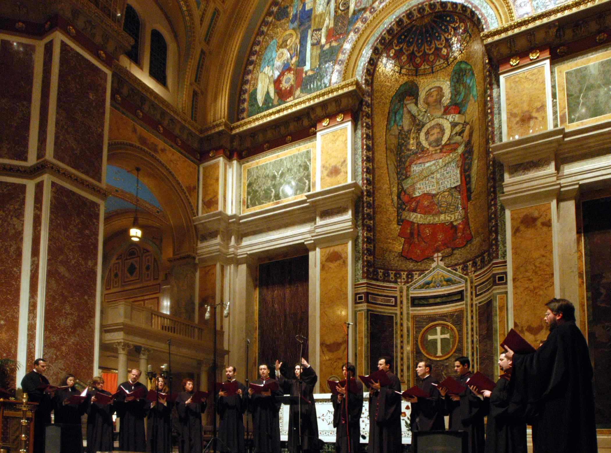
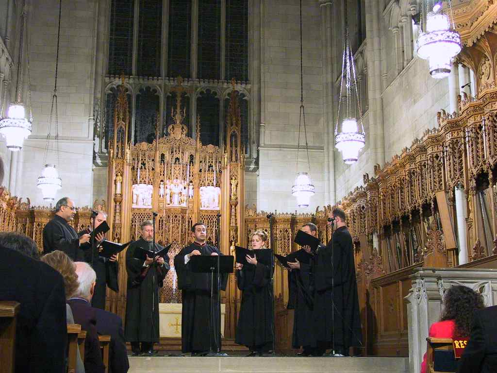
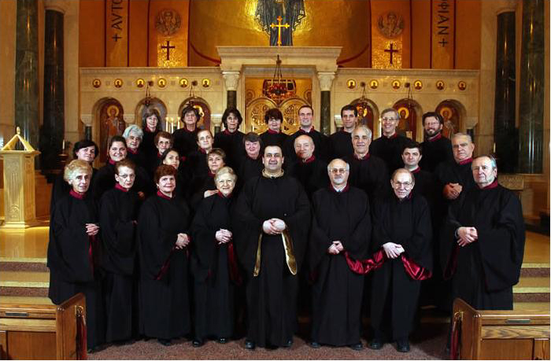

Βυζαντινή Μουσική στις ΗΠΑ / Byzantine Music in the USA
Παρελθόν, παρόν και μέλλον / Past, present and future
A. Andreou:
Alexander Lingas has written a beautiful essay entitled: "Tradition and Renewal
in Contemporary Greek Orthodox Psalmody" found in "Psalms in Community" edited by
Attridge and Fassler, 2003. The final two paragraphs of his essay comment on the
state of psalmody in America, where he writes the following:
"One particular area of concern that has yet to be addressed significantly in practice
is the virtual absence [in Greece] of congregational singing... The situation is
somewhat different in the Greek Orthodox Archdiocese of America, where some members
of the clergy and the laity have also expressed a desire for increased congregational
participation. Historical circumstances such as the coincidence of Greek immigrations'
height in the early twentieth century with the period of Greek music's maximal
Westernization [59] {see footnotes below} as well as the pressures of assimilation,
contributed to the development of a distinctly Greek-American tradition of Orthodox
liturgical music. [60] In many American parishes, plainchant--often sung by cantors
who have received only limited training in Byzantine music--is used only for offices
and weekday services. This is because the Sunday Divine Liturgy has generally become
the preserve of mixed choirs with electronic organs, who sing musical settings influenced
strongly by Russian and Western prototypes. [61] Most attempts to foster congregational
singing in America have therefore not been inspired by the traditions and history
of Orthodox psalmody but by Protestant hymnals. [62]
"There are, however, now tentative signs--most visibly the increased space devoted
in recent editions of the National Forum of Greek Orthodox Church Musicians' annual
'Liturgical Guidebook' to rubrics for psalm verses that were customarily omitted--that
a revival of psalmody may also be occurring in the Greek Orthodox Archdiocese of
America. Presently observable trends [this essay was written in 2002] that would
appear to be contributing to the renewal of Greek Orthodox psalmody in North America
include greater familiarity with liturgical structures brought about by the use
of English in worship, more frequent contact with church musicians from other Orthodox
jurisdictions, [63] the recent establishment of a significant number of Greek Orthodox
monasteries, and the growing popularity of recordings of chant, especially those
featuring adaptations of traditional melodies to English. [64] One should also not
discount the missionary zeal of those who have
experienced the newly revitalised psalmodic traditions of Greece at first hand.
Like the emissaries of Prince Vladimir who wished to recapture the experience of
worship at the Constantinopolitan Hagia Sophia in their native Kievan Rus, a small
but significant group of American clergy and church musicians are now working hard
to restore a sense of heavenly glory to psalmody in their own Greek Orthodox parishes."
Footnotes:
[59] The Westernization of Greek music, both sacred and secular, during this period
is briefly surveyed by Alexander Lings, "Music," in Speake, "Encyclopedia of Greece
and the Hellenic Tradition," 2:1102.
[60] The development of liturgical music in the United States is surveyed by Frank
Desby, "The Growth of Liturgical Music in the Iakovian Era," in "History of the
Greek Orthodox Church in America" (ed. M. B. Ephthimiou and G. A. Christopoulos; New York: Greek Orthodox Archdiocese of North and South America, 1984), 303-23; George Raptis, ed., National Forum of Greek Orthodox Church Musicians Silver Anniversary
1976-2001 (Bloomington, Ind.: National Forum of Greek Orthodox Church Musicians,
2002); and in the booklet to Alexander Lingas, dir., "Tikey Zes: Choral Works." Capella Romana. Gagliano GR501-CD (1999), 1-2.
[61] See, e.g., Christos Vrionides, "Byzantine Hymnology: The Divine Services of
the Greek Orthodox Church" (2d ed.; repr., Brookline, Mass: Holy Cross Orthodox
Press, 1980); Perecles P. Phillips, "MEGA SABBATON PROI: The Holy Saturday Morning
Service (Junior Choir Series; Denver: Federation of Greek Orthodox Choirs of the
Western States-East, 1980); and Frank Desby, ed., "Communion Hymns of the Pentecost
Season" (Federation Choral Series; Los Angeles: Greek Sacred and Secular Music Society,
1986).
[62] Tom Pallad, ed., "A Guide to Congregational Singing" (n.p.: National Forum
of Greek Orthodox Church Musicians, 1991). Examples of such hymnals are Ernest A.
Villas, "The Divine Liturgy of St. John Chrysostom Hymnal: A Hymnal with Texts in
Greek, English and English Phonetics" (2d ed.; Brookline, Mass.: Greek Orthodox
Archdiocese of North and South America Department of Religious Education, 1982); Nicolas E. Maragos, "Holy Cross Liturgical Hymnal" (Brookline, Mass.: Holy Cross
Orthodox Press, 1988); and Tikey Zes, arr., "The Divine Liturgy Arranged for Congregational
Participation" (San Francisco: Diocese of San Francisco, 1984).
[63] Collaborations between musicians of different jurisdictions have occurred at
the local level for such events as joint celebrations of Vespers on the Sunday of
Orthodoxy. Thanks in part to the recent establishment of the Pan-Orthodox Society
for the Advancement of Liturgical Music (PSALM), cross-jurisdictional contacts now
also occur frequently at the highest levels. Further particulars are available at
PSALM's web site:
www.orthodoxpsalm.org, which includes a link to its lively listserver.
[64] Recordings made by the Boston Byzantine Choir and the three sisters who form
the ensemble EIKONA have circulated widely. Publications of chant in English include
"The Divine Liturgy of Our Father among the Saints John Chrysostom, Archbishop of
Constantinople" (Seattle: St. Nektarios Press, 1982), and "Selected Byzantine Hymns" (Brookline, Mass.: Holy Transfiguration Monastery, 1986).

Byzantine music activity in the Archdiocese of
America
Prepared by dr. Vicki Pappas, National Chairman
National Forum of Greek Orthodox Church Musicians
For His Eminence, Archbishop Demetrios
May 30, 2005
[html]
The article doesn't make clear distinction between authentic Byzantine chant and
its various "modifications": organ accompanement,
harmonisation, use of Sakellaridis' (and of other non-traditional composers') music,
Westernised style.
US-based psaltai, choirs, research and more ..
(incomplete list)
Archdiocesan Byzantine Choir of the Greek Orthodox Archdiocese of America, Dir. Archdeacon Panteleimon Papadopoulos [
Official site] [
Facebook]
http://www.cappellaromana.org
(photo from choir site, click for larger)

Romeiko Ensemble (Dir. Y. Bilalis)
(photo offered by C. Indianos, click for larger)

Independent choir of psaltai (Dir. Stelios Kontakiotis)
(photo offered by C. Indianos, click for larger)

St Sophia, Washington Choir
(parish site contains
more images and audio sample)
(photo from parish site, click for larger)

Fr. Constantine Terss
His homepage has lots of
info on his research.
(photo from Fr. Constantine's
resume)

Fr. Seraphim Dedes
http://sgpm.goarch.org/Monastery/index.php?p=31
http://sgpm.goarch.org/ematins/music.htm
St. Anthony's Monastery
http://www.stanthonysmonastery.org/
"...contains more than 1000 pages of Byzantine music, transcribed
into Western notation according to the style of chanting used on the Holy Mountain.
The scope of this project covers the liturgies of St. John Chrysostom, St. Basil
the Great, St. James, and the Liturgy of the Presanctified Gifts, as well as various
doxologies. The words of the hymns are provided in Elizabethan English, Modern English,
and Greek. Click on the five orange buttons below to access these hymns."
And much more.
Greek Orthodox Archdiocese
(featuring Fotios Ketsetzis)
(photo from Holy Cross site)

http://www.goarch.org
Nick Harisiadis
Holy Taxiarhai and St. Haralambos Greek Orthodox Church
7373 Caldwell Avenue ~ Niles, Illinois 60714
(photo from parish site, click for larger)

[biography]
Radio Broadcast on Byzantine Chant
by A. Lampousis featuring many psaltai and choirs.
http://www.axionestin.org
Diane Touliatos-Miliotis
Research and publications on Byzantine Music history [html]
N. Giannoukakis
American Society of Byzantine
Music and Hymnology
P. Papademetriou
http://music.analogion.net/
Check work on scales
and find many scanned scores.
Also on this site a bilingual list of all US parishes that use Byzantine Chant in
the Divine Liturgy [list].
National Forum of Greek Orthodox Church Musicians
[homepage]
Subdeacon Karim El Far
[homepage]
(US-based) attempts to move towards Byzantine
Chant in English
St. Anthony's Monastery (Arizona)
[html]
Cappella Romana
Project: Divine Liturgy in English sung to Byzantine Chant
[press release]
(photo from press release)

Subdeacon Karim El Far
I have completed three Divine services in the English language using the Byzantine
notation. It was not an easy project but with God's help, I was able to complete
the first phase of the project. The English Liturgy was recorded last year in Beirut,
Lebanon, by the Mt. Lebanon Choir. You may hear audio demos and order the CD from
my [homepage]. Quick links
to the scores:
in English
TheDivineLiturgy.pdf
DivineLiturgy8.pdf
PaschaService.pdf
in Spanish
LiturgyInSpanish.pdf
Dr. Jessica Suchy-Pilalis
Research summary home page [html]
Interview [wma] and audio sample (Axion Estin) in Greek and English [wma].
(from axionestin.org)
(US-based) Intermediary attempts to move towards
Byzantine Chant in English
(inspired by Byzantine melodies, still following
the Western musical system/style though to lesser or greater degrees)
Presvytera Katerina Sitaras Makiej
www.ancienthymns.com
http://www.liturgica.com/
Eikona
http://www.eikona.com/
Presvytera Stacey:
"..arrangements of "Byzantine enough" sounding hymns that we began recording
them...well over a decade ago. We have grown very much in the process. Now we are
learning to read Byzantine chant which is spurned on by all that has become available
in recent years.
Our goal is simple: to offer the Byzantine hymnology of the Greek Orthodox Church,
in English, to the faithful (and if the Lord wills, outside the Church as well).
So much of our Faith is expressed through its hymnology, and we want to make that
accessible to the average English-speaking Orthodox Christian".
Stan & Nancy Takis
http://www.geocities.com/takistan/
Stan Takis:
"...the sheet music you find on our website is not "traditional Byzantine chant." Most of it certainly is chant and Byzantine-inspired, but it is mostly written for
American choirs to use during Divine Liturgies. The music Nancy chants at the psalterion
is not the same as she puts on paper for use by Western choirs. She simplifies the
chant and makes it easy for them to read without organ accompaniment. The music
follows basic Byzantine rules for syllable placement and replicates the tonal qualities
of the octoechos as closely as is possible in Western notation, but because of these
limitations and the inexperience of American choirs, it cannot be called traditional
Byzantine, and we are upfront about this.
I, of course, favor the promotion in America of traditional Byzantine music by trained
chanters, especially at Vespers and Orthros and other services where there are usually
chanters only and no choir. I hope Byzantine music by psaltis gets better in America,
because I have noticed that many of them (priests, too!) do not know the tones or
the melodies, or what to do in certain circumstances.
However, for Sunday liturgies, it does not seem to me as if chanters are going to
replace choirs any time soon, and the music on our website offers these choirs a
chance to sound more like traditional chant and to learn some basics at the same
time. ... I agree, it is an intermediary between the Westernized music currently
being employed and true, traditional chant. I hope the music on our website will
nudge the Westernized choirs in a more traditional direction, and that they will
be happy to learn this music and explore it further."